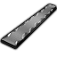

可直接当材质打造武器/防具/装备的金属与合金(stuffProps 含 Metallic/StrongMetallic/Rugged… 且不属塑料玻璃陶瓷宝石)

代钢级·原始·熟铁 WroughtIron
代钢级家具建筑647防具142穿戴件40近战工具96远程武器7其它8共940件 价值0.8 质量0.35 护甲0.75/0.75/0.08 利钝0.80/1
Vile's Metallurgy · def自带 · Things/Item/WroughtIron
强化工程级·原始·黑曜石 Obsidian
强化工程级家具建筑487防具34穿戴件19近战工具44其它2共586件 价值5 质量0.50 护甲0.90/0.50/0.20 利钝1.40/—
游戏本体 Odyssey · 按消耗它的配方研究档 · Things/Item/Resource/Obsidian